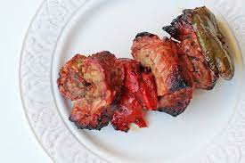

Kontosoubli is a popular Greek food consisting of pieces of meat and sometimes vegetables grilled on a skewer/spit. It is usually eaten straight off the skewer while still hot. It can be served with or inside of a rolled pita, typically with lemon, sauces, vegetables such as sliced tomato and onion, and fried potatoes as a side. The meat usually used in Greece and Cyprus is pork, although chicken, beef, and lamb may also be used there and elsewhere.
TIP: Try to have fatty meats equidistributed!